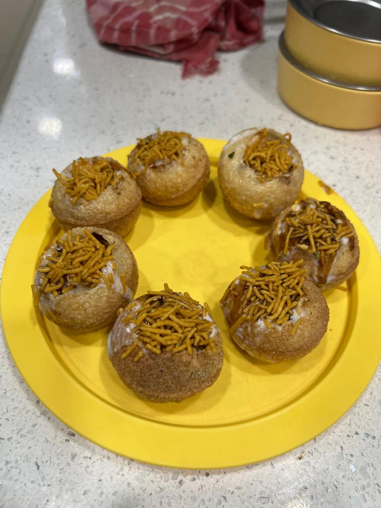

Golgappa

INGRIDIENTS
- Semolina + salt
- Flour
- Water
- Baking soda
- Boiled potatao
- Curd
- Tamarind sauce
- Crispy namkeen
- Lemon
INSTRUCTIONS
- In a medium-sized,add 1 cup fine semolina,2 tablespoon flour,1/8 teaspoon Baking soda and pinch of salt. Mix well.
- Now add water,1-2 tablespoons at a time, and knead a smooth elastic dough that is neither too soft nor too stiff
- It will take about 8-10 min to knead the dough
- Cover the dough with a damp kitchen napkin,set aside for 30 min.
- After the resting period, knead the dough again for another 5 min.Dive the dough into four parts.
- Grease the rolling pin and board the work surface with oil.Roll the mixture. Cut out round pieces from that.
- Fry the cutouts.Yours golgappa will get ready
- Fill the golgappa with boiled potatoes,onion,curd,tamarind sauce,crispy namkeen and lemon.Decorate it with corriander.
- You are ready to serve the Golgappa.